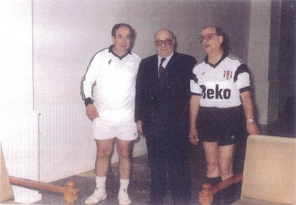

Denktaş bazen kendi kullandığı arabasına atlar, Yılanlıada’ya dört beş km mesafedeki kooperatife gelerek bana sürpriz yapardı.
Aslında bu durum bence daha çok şoförsüz, korumasız tek başına özgürlüğün tadılmasıydı. Direksiyonun başında istediği yöne gidebilme özgürlüğü.
Denktaş, işte o kaçamakların birinde bizim kooperatifin toprak yoluna dalmış, biraz da yolları karıştırmış. Güçbela kooperatifin kapısından girmiş. Dağın başı, ortada kimse yok, in cin top oynuyor.
Ortalıkta sadece bizim Konyalı bekçi var, o da eğilmiş yerde bir şeyler çapalıyormuş. Denktaş, Erol Manisalı’nın yeri neredeydi diye sorunca, “Şurada beyim,” demiş ve başını yere eğerek çapalamasına devam etmiş.
Rauf Denktaş güçbela evin önüne gelmiş. Biz de bir telaş, bahçede çamurlu bir şortla çalışıyorum, üstüm başım toz toprak içinde...
Neyse, Nuriye ile birlikte Rauf Denktaş’ı buyur ettik.
Denktaş’ın bana ilk sözü, “Yahu sizin kapıdaki adam beni tanımadı bile, Erol Manisalı diye sorunca eliyle işaret etti ve işine devam etti,” oldu.

Erol Manisalı, Rauf Denktaş, Mümtaz Soysal
Denktaş tabii bunu şaka yollu söylüyordu, her zaman olduğu gibi işin içine bir espri katıyordu.
Ben de gerekeni söyledim: “Başkan, o Türkiye’deki cumhurbaşkanını bile tanımaz, telaşlanmayın,” deyiverdim.
Denktaş gittikten sonra bizim bekçiye: “Yahu sen koskoca cumhurbaşkanını tanımamışsın, işine devam etmişsin,” deyince bana ne dedi bilir misiniz: “Erol Bey, tanımaz olur muyum, Denktaş’ı karşımda görünce şaşırdım, dilim tutuldu sanki, sadece elimle senin evi işaret ettim, konuşamadım, donakaldım.”
Daha sonra karşılaştığımızda Konyalının söylediğini Denktaş’a aktardım ve “Adam sizi görünce şok geçirmiş, siz de beni tanımadı diye kızıyordunuz,” dedim.
Böylelikle Denktaş, Konyalı ve bendeniz üçgenindeki sorun da hal yoluna girdi.